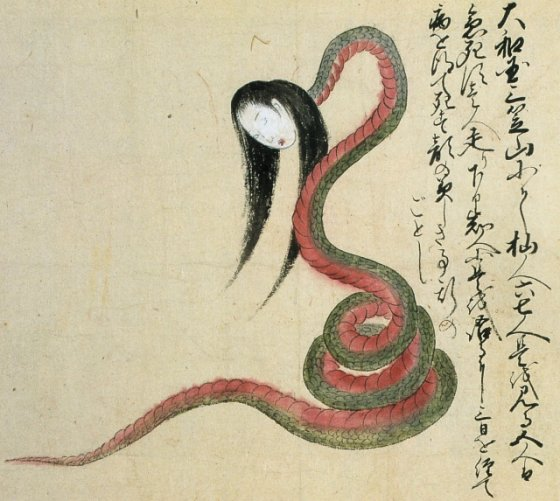
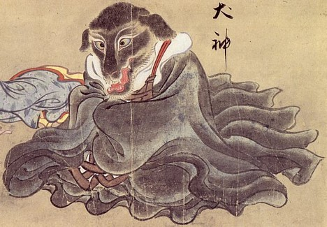
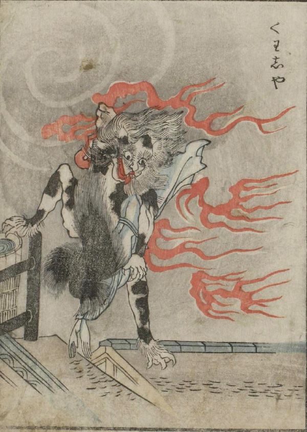
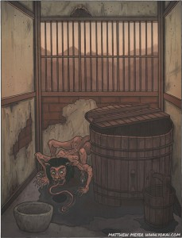
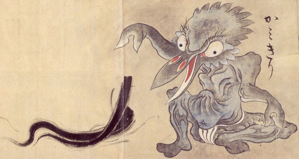
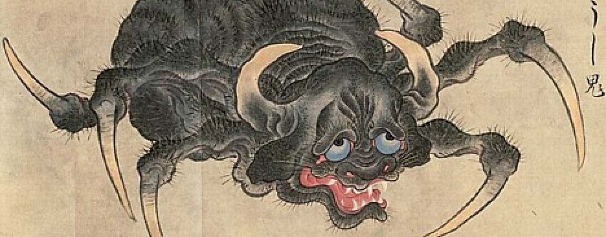

son mujeres que tienen una maldición, o una manifestación sobrenatural de sus deseos. Tienen la habilidad de alargar su cuello, lo que ocurre durante la noche mientras esta persona está dormida.
Nure onna son serpientes de mar vampíricos que rondaban las costas y ríos, en busca de los seres humanos para comer.
Inugami son una especie de familiar, o el espíritu de la posesión, que se encuentran en Kyushu, Shikoku, y en el oeste de Japón en otros lugares. En público, un inugami parece idéntico a un perro ordinaria con el fin de mezclarse con la sociedad. Sin embargo, su verdadera forma es la de una cabeza, del perro momificado desecado, a menudo vestidos con atavíos ceremoniales. Esto se mantiene a salvo (y lejos de miradas indiscretas) en un santuario secreto en la casa de su propietario.
un gato doméstico puede convertirse en un bakeneko si ha vivido 100 años, si ha adquirido un kan (3.75 kilogramos) de peso o si se le permite tener una cola larga. Un gato también podía ser considerado un bakeneko si se le veía tomando aceite de una lámpara, algo demasiado común porque el aceite de las lámparas era aceite de pescado original.
Akaname es una pequeña yokai, duende-como la que habita sólo las casas más sucias y baños públicos. Es aproximadamente del tamaño de un niño o un adulto pequeño, a pesar de que generalmente aparece mucho más pequeño debido a su postura encorvado. Cuenta con una mata de cabello grasoso, viscoso en la parte superior de su cabeza. Su cuerpo está desnudo, su piel grasa al igual que su cabello.
El Kamikiri es un yokai nocturno que se asemeja a un insecto con cresta y fuertes pinzas a modo de manos, que utiliza para cortar la cabellera de sus víctimas. Se le atribuye una única travesura, al caer la noche entra en las casas y corta el pelo del pobre infeliz que duerme plácidamente en su cama.
El Tsuchigumo, conocida como la araña purseweb en Inglés, se puede encontrar en todas las islas japonesas y en gran parte del mundo. Tsuchigumo de larga vida puede transformarse en yokai, y crecer a un tamaño monstruoso, capaz de atrapar una presa mucho más grande (en particular, los seres humanos).